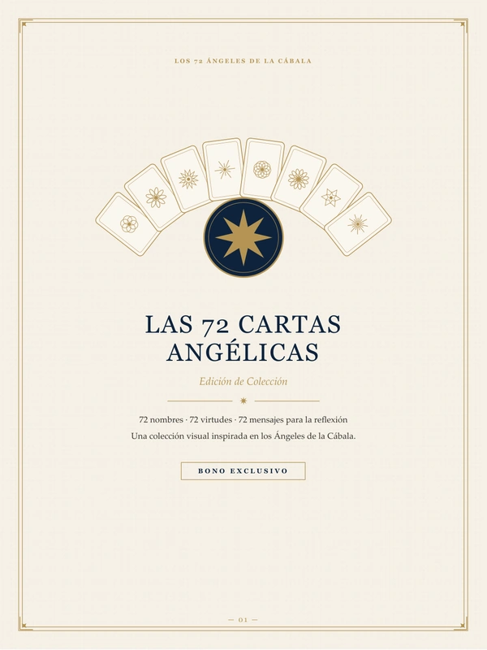
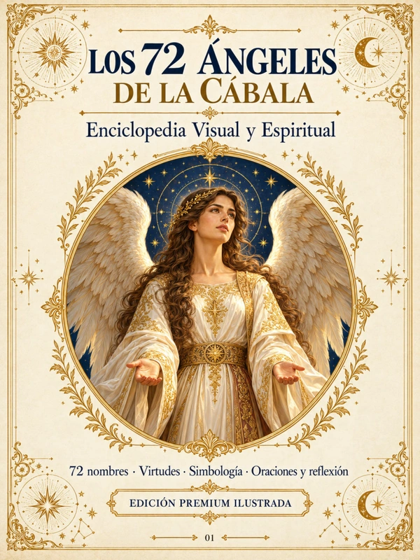
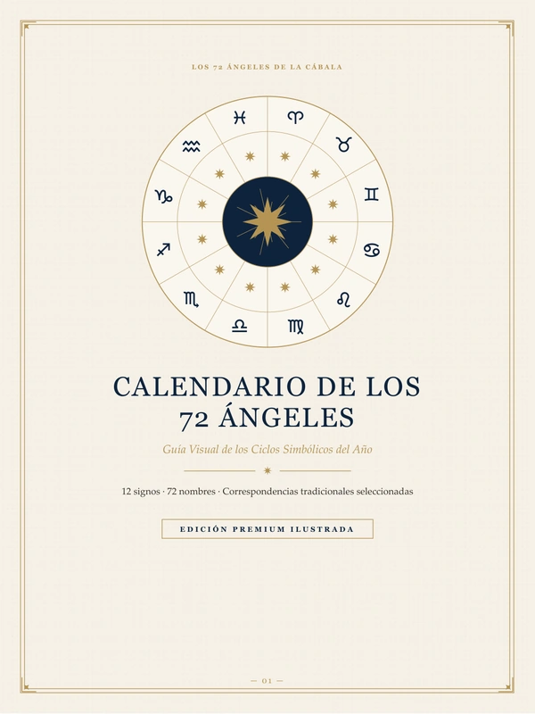
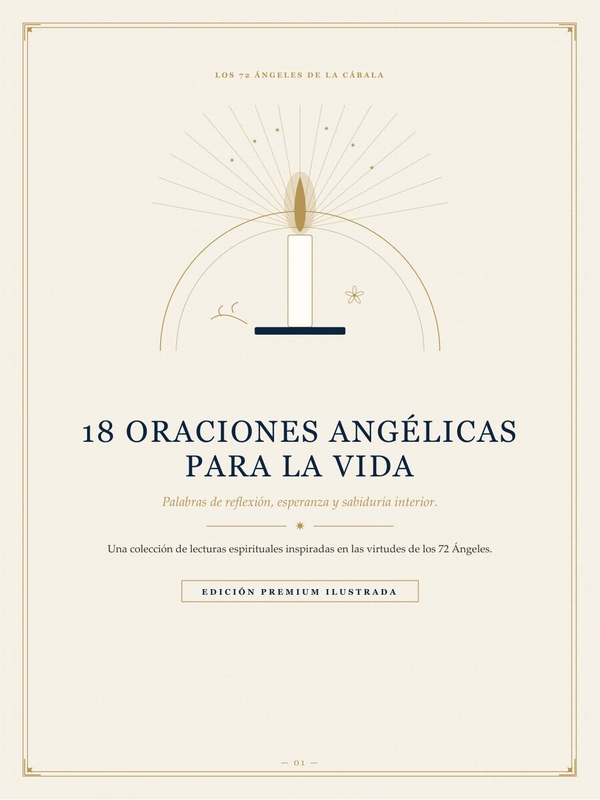
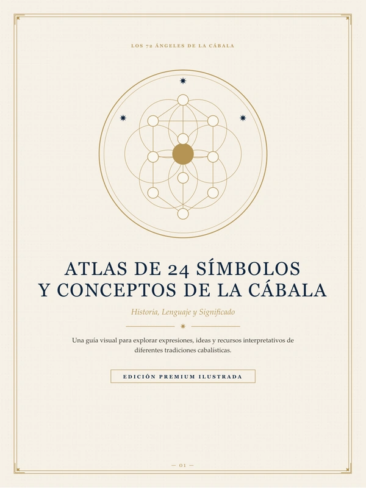
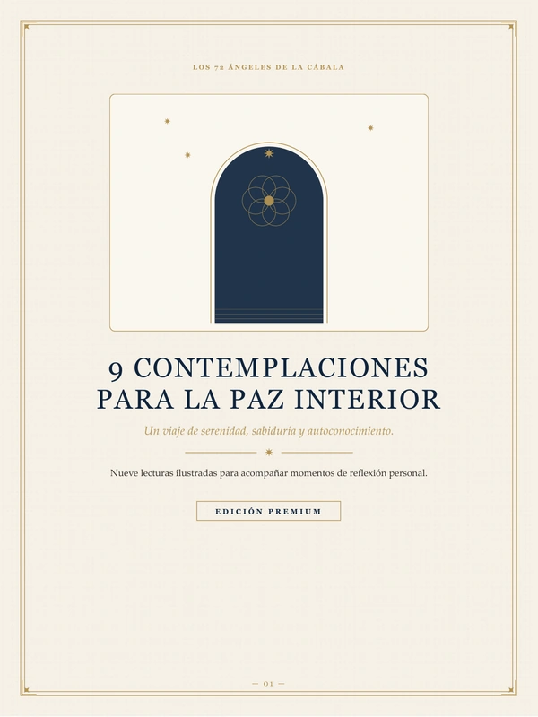

Bono 01
Las 72 Cartas Angélicas
72 cartas con el nombre, la virtud y un mensaje breve de cada Ángel.
Abrir materialÁrea de miembros
Aquí tienes tu guía de los 72 Ángeles y tus 5 bonos. Guarda esta página en tus favoritos para volver cuando quieras.
Tu material principal

Enciclopedia Visual y Espiritual
La introducción a la tradición, el índice completo y las 72 fichas: esencia, virtudes, cuándo consultarlo, oración inspirada y reflexión de cada Ángel.
Incluidos en tu acceso

72 cartas con el nombre, la virtud y un mensaje breve de cada Ángel.
Abrir material
Los 72 nombres organizados en los doce signos del ciclo simbólico del año.
Abrir material
Dieciocho oraciones originales para distintos momentos de la vida.
Abrir material
Conceptos de la tradición explicados con su contexto histórico.
Abrir material
Nueve lecturas ilustradas sobre serenidad, paciencia y equilibrio.
Abrir materialColección complementaria
¿Añadiste la Biblioteca a tu compra? Tu acceso exclusivo llegó en el correo de Hotmart: ábrelo desde el enlace del mensaje.


Toca «Abrir material»: se abre en una nueva pestaña, donde puedes leerlo o descargarlo.
Sí, para tu uso personal. Descarga el archivo y envíalo a tu impresora.
Escríbenos usando los datos de soporte que aparecen en el correo de tu compra en Hotmart.